Propietario
Configura canales, seguridad, roles, herramientas gratuitas y el paquete desbloqueable del servidor. Es la única persona que puede reclamar regalos del servidor.
DOCUMENTACIÓN PÚBLICA · ACTUALIZADA EN SEPTIEMBRE DE 2026
Configura anuncios de Twitch, YouTube, Kick y TikTok, administra varias comunidades y crea perfiles públicos conectados con Discord.
Las instrucciones son para propietarios, administradores delegados, streamers y staff de FaroLive. Las capturas proceden de una ejecución local aislada con nombres, IDs, servidores, estadísticas y transmisiones ficticios.
01 · ACCESO
Configura canales, seguridad, roles, herramientas gratuitas y el paquete desbloqueable del servidor. Es la única persona que puede reclamar regalos del servidor.
Un rol de control total puede administrar la comunidad. Un rol de streamers sólo puede agregar y editar registros; no obtiene acceso por tener Administrador en Discord.
Personaliza sus mensajes, consulta sus registros y crea su perfil cuando su ID de Discord está asociado correctamente.
Soporte, moderación y superadministración usan un panel separado. El superadministrador puede revisar todo y entregar o retirar beneficios temporales.
Ser streamer no elimina los permisos que reciba como propietario o staff. Si un canal ya pertenece a otro perfil, FaroLive protege la vinculación sin retirar los demás accesos de la cuenta.
02 · INSTALACIÓN
Entra en panel.farolive.xyz y selecciona Agregar FaroLive a un servidor.
Discord mostrará servidores donde tengas autorización para instalar aplicaciones.
La invitación solicita Administrador para evitar fallos causados por sobrescrituras de canal. Puedes desmarcarlo, pero tendrás que conceder manualmente los permisos mínimos.
Inicia sesión con Discord. Si la comunidad todavía no aparece, pulsa Actualizar servidores.
El panel comprueba cada canal seleccionado y enumera únicamente los permisos que faltan. Los permisos globales pueden quedar anulados por una categoría o por el propio canal.
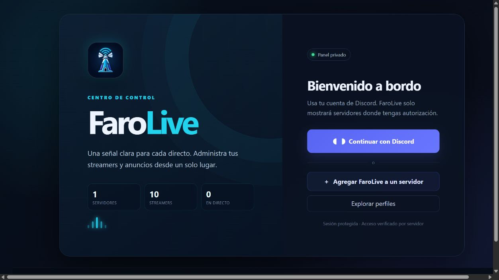
03 · PANEL
La portada distingue propietario, gestor, rol delegado y streamer.
Elige destinos para directos, videos y notificaciones antes de registrar creadores.
Usa el formulario web o el comando rápido /alta.
El canal de simulaciones es opcional; el diagnóstico web explica cualquier anuncio que no aparezca.
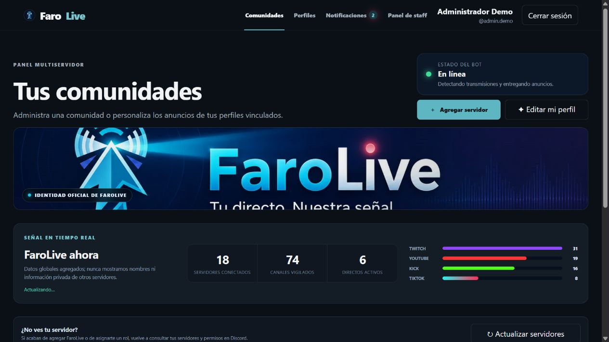
04 · COMUNIDAD
El centro del servidor está dividido en módulos retráctiles para mantener una vista limpia. Los accesos rápidos llevan a Beneficios, Configuración, Herramientas, Monitoreo, TikTok y Streamers.
Define destinos distintos para directos y videos. Si cambias el canal de directos, elige entre aplicarlo sólo a futuros anuncios o trasladar también los activos sin repetir la mención.
Selecciona un canal privado obligatorio para actualizaciones y premios. Los logs operativos son opcionales y pueden ir a otro canal.
Configura un rol temporal “en vivo”. El canal de pruebas sólo se exige cuando se utiliza /prueba.
Separa roles con control total, roles que administran streamers y roles autorizados para el flujo manual de TikTok.
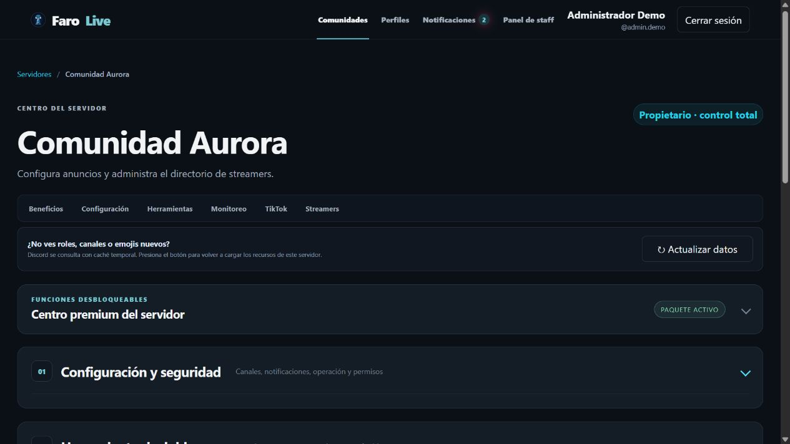
05 · REGISTRO
Indica nombre, ID o mención de Discord, plataforma, enlace, mensaje, mención y opciones de filtrado. La vista previa privada muestra el resultado antes de guardar.
/alta twitchRegistra Twitch con usuario, enlace, hashtag, mención y unificación opcional./alta kickRegistra Kick con el mismo flujo reducido./alta youtubePuede activar también los videos nuevos del canal.Al registrarlo se elige entre esperar al siguiente directo o anunciar el actual sin mención. FaroLive nunca atribuye horas anteriores al alta.
El ID de Discord une plataformas de la misma persona, evita multiplicar sus horas y habilita el perfil público. Un canal de plataforma no puede apropiarse silenciosamente de una identidad ya vinculada.
06 · DETECCIÓN
Los intervalos de consulta pueden variar por plataforma, límites externos y estado del servicio. FaroLive utiliza eventos cuando están disponibles y comprobaciones de respaldo para recuperar cambios perdidos.
07 · ENRUTAMIENTO
Sin filtro, la comunidad recibe todos los directos del registro. Al activarlo aparece el hashtag oficial; las opciones extensas permanecen plegadas.
Si desaparece el hashtag, el anuncio puede seguir activo, pero termina el segmento de horas de promoción. Si aparece el hashtag reconocido de otra comunidad, FaroLive transfiere el anuncio correspondiente sin duplicar la emisión real.
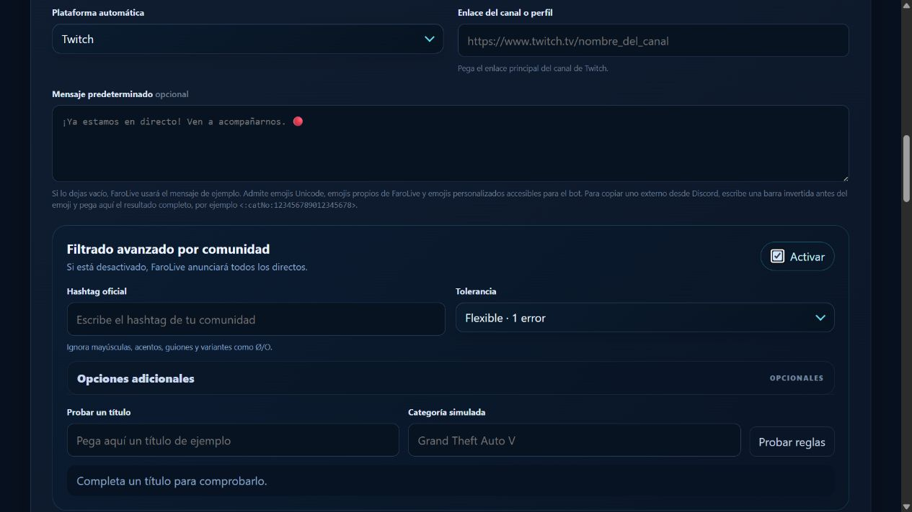
08 · AUTOMATIZACIÓN
Un solo anuncio reúne Twitch, Kick y YouTube con botones independientes. Se actualiza cuando abre o cierra una plataforma y respeta las plataformas seleccionadas.
Un corte breve reutiliza el anuncio anterior. El regulador limita menciones por servidor, canal y periodo.
Los cambios del directo actualizan el mensaje. Tras reiniciar, FaroLive recupera emisiones activas, cierra anuncios antiguos y corrige roles temporales.
Programa desde un calendario un texto que se usa una sola vez y luego vuelve al mensaje predeterminado.
Los emojis se insertan justo debajo del mensaje al que pertenecen. Las menciones pueden ser ninguna, @everyone, @here o un rol permitido.
09 · SIEMPRE DISPONIBLES
Estas funciones no requieren beneficios y aparecen después de Configuración y seguridad.
Explica filtro sin coincidencia, permisos, registro pausado, plataforma sin confirmar, espera de un directo nuevo o error de publicación.
Comprueba que el directo continúe, que el problema se haya resuelto, que el filtro permita anunciar y que no exista otro anuncio. Nunca repite una mención ya enviada.
Mantiene un único mensaje paginado con los directos activos. El orden es neutral y no favorece a quien tenga beneficios.
Permite descargar un CSV propio y solicitar revisión de una sesión. La corrección queda auditada y no sobrescribe libremente las horas originales.
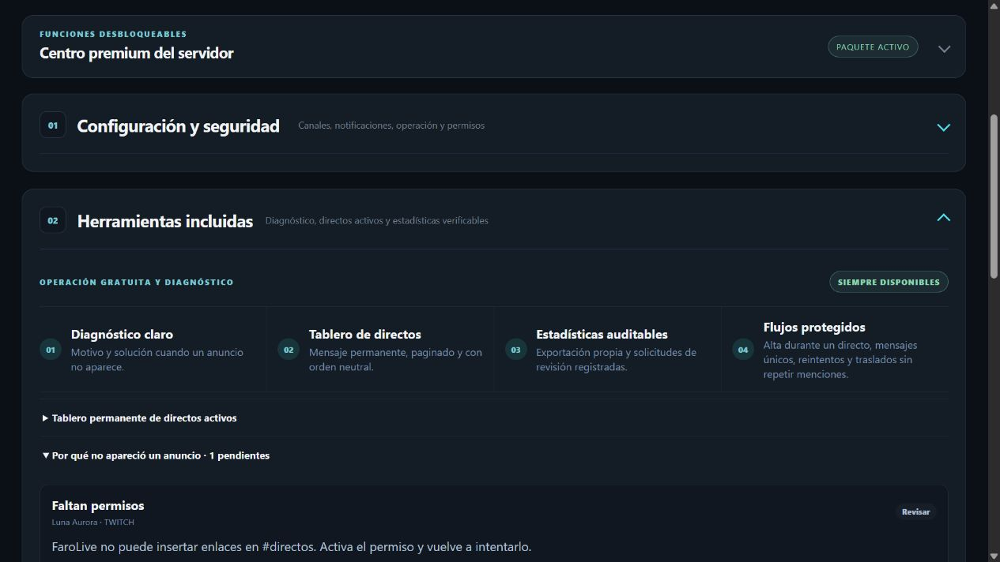
11 · TIKTOK
/live tiktokAbre la vista previa privada y publica el LIVE configurado./live finalizarFinaliza el anuncio activo propio; un administrador puede elegir otro streamer./video tiktokPublica un video mediante enlace y mensaje opcional.La comunidad debe crear antes una plantilla y autorizar el rol. El streamer puede recibir recordatorios con botones para confirmar que continúa o finalizar. Estas confirmaciones no se consideran detección automática ni inventan horas verificadas.
12 · IDENTIDAD PÚBLICA
Un usuario elegible crea una identidad única con nombre, enlace corto, biografía, avatar, banner, redes, reproductores y estilo. La misma identidad se conserva aunque participe en varias comunidades.
Las tarjetas y el perfil muestran EN VIVO o FUERA DE LÍNEA. Durante una emisión aparecen botones sólo para las plataformas activas detectables.
Cambios de paleta, tipografía, animación, partículas, fondo y marco se reflejan antes de guardar.
Admite PNG, JPG, WebP o GIF dentro de los límites indicados, además de recursos de Discord y búsqueda GIPHY cuando esté configurada.
Genera enlace, código QR, tarjeta social y metadatos para Discord, X y WhatsApp.
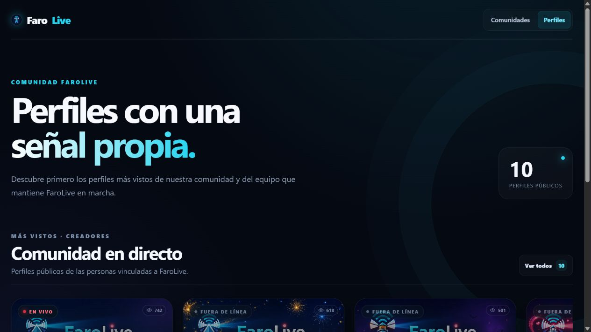
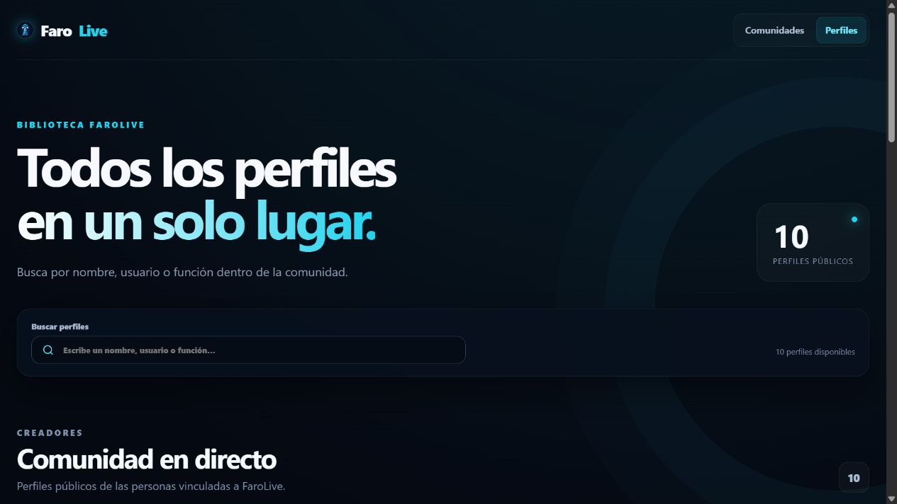
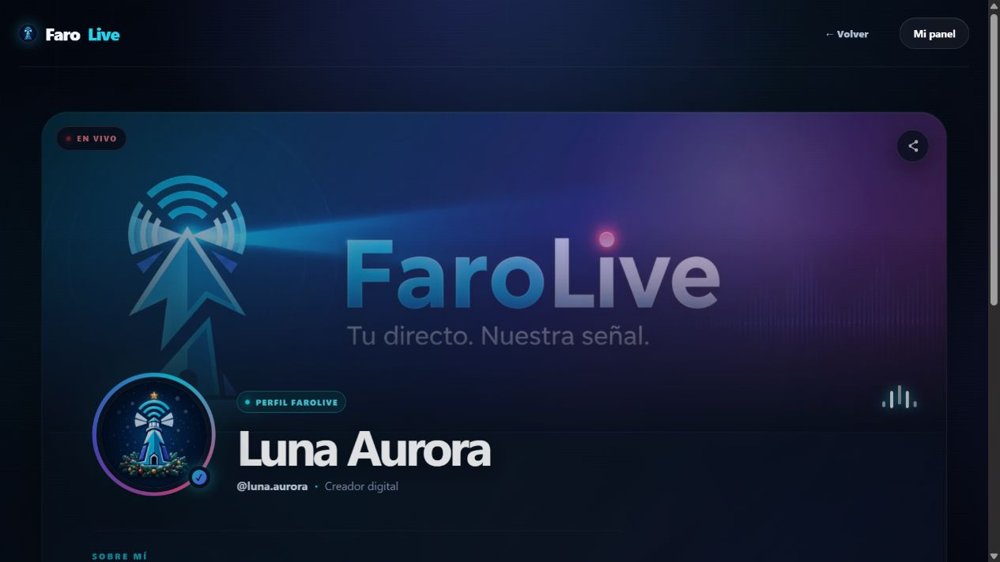
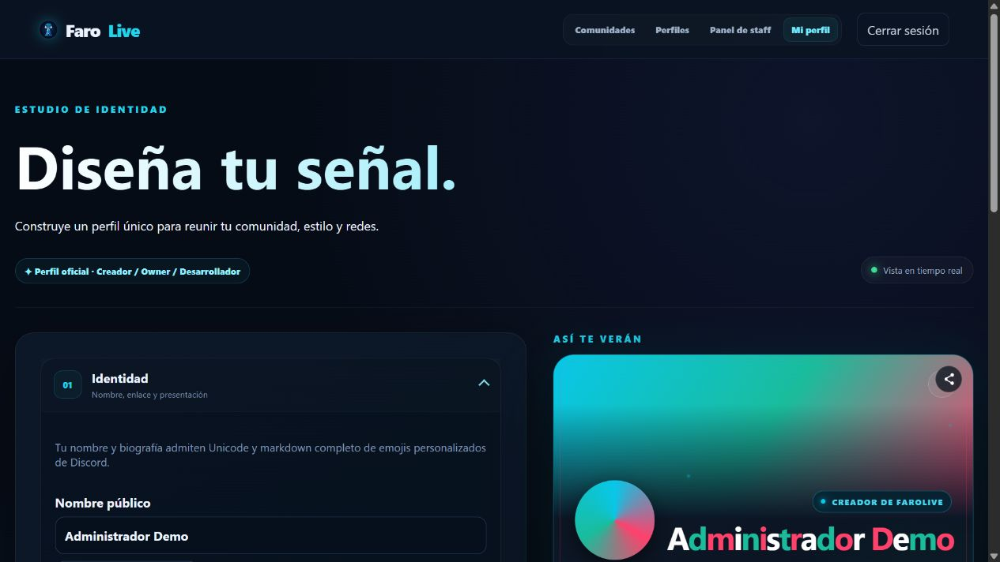
14 · COMUNICACIONES
La bandeja reúne regalos, cambios de estado, entradas o salidas del Top 10 y resúmenes de actualizaciones. Un contador en la navegación muestra avisos sin leer.
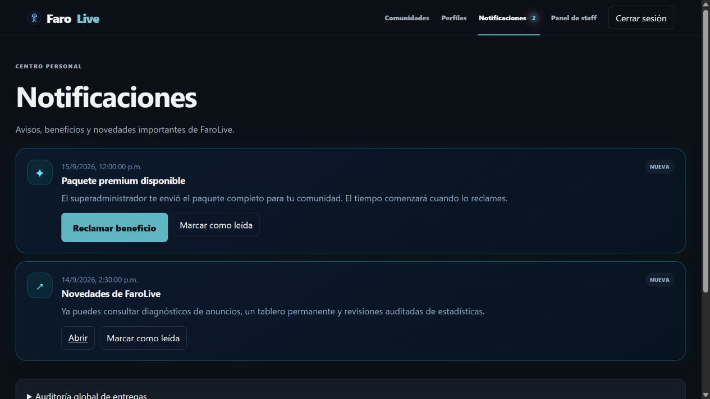
15 · MÉTRICAS
La temporada dura 15 días. Sólo participan creadores, no staff. Las vistas históricas se conservan, pero cada temporada usa puntos nuevos y válidos; recargas repetidas se descartan. Visitar perfiles distintos puede contar para cada uno bajo las reglas antifraude.
Una emisión de cuatro horas cuenta como cuatro horas aunque se anuncie en cinco servidores o utilice varias plataformas simultáneas vinculadas a la misma persona. Las horas de promoción se contabilizan por separado cuando coincide el hashtag reconocido.
El propietario y el sistema pueden consultar directos, creadores elegibles, horas, promoción y anuncios. El panel global añade Top 10 de servidores por horas, servidores promocionados, creadores promotores, creadores registrados y streamers pequeños con menos de 150 espectadores de pico.
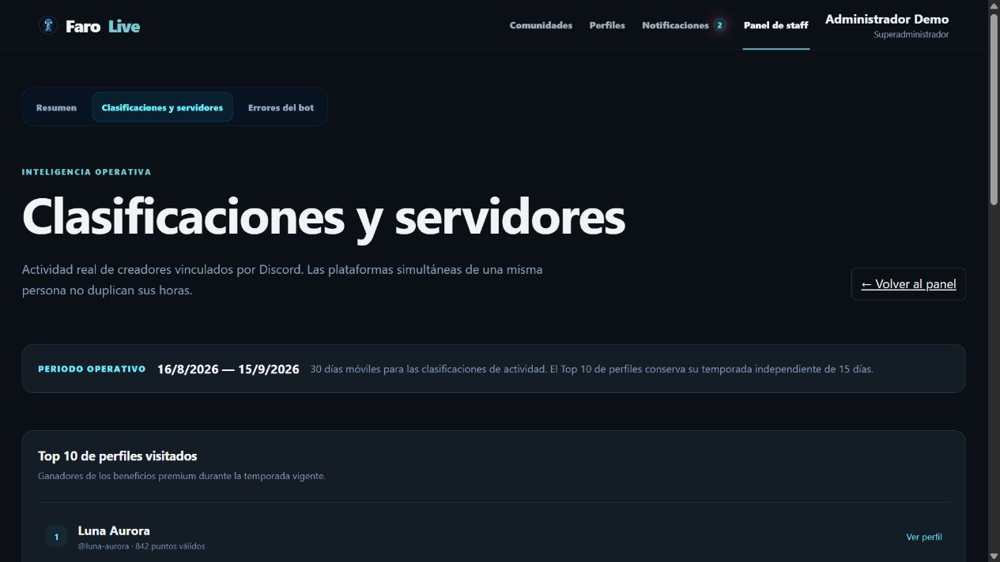
16 · EQUIPO FAROLIVE
La consola de errores es una vista separada dedicada a incidentes sanitizados del bot: fecha, operación, origen, código, diagnóstico y contexto seguro. No expone secretos ni acceso a Ubuntu.
El superadministrador dispone de inventarios separados para perfiles y servidores, con estado, origen, duración, tiempo restante y acciones auditadas para ampliar, reducir o retirar. Los beneficios automáticos del Top 10 son de sólo lectura.
Los perfiles de staff pueden mostrar estado, actividad, disponibilidad y última conexión cuando Discord proporciona los datos y los permisos lo permiten.
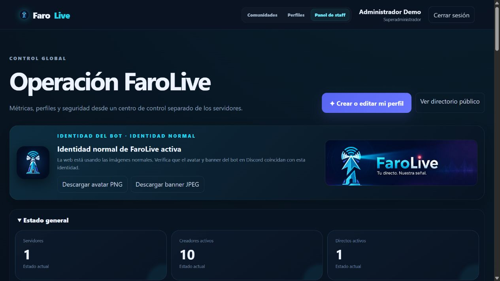
17 · IDENTIDAD ESTACIONAL
La web adapta avatar, banner, favicon y acentos a temporadas relevantes para Latinoamérica y Estados Unidos. Fuera de esas fechas utiliza la identidad normal.
El panel global avisa cuándo cambiar o restaurar manualmente el avatar y banner públicos del bot en Discord.
18 · CONFIANZA
panel.farolive.xyz y revisa el dominio antes de iniciar sesión.El botón Apoyar FaroLive dirige al enlace de PayPal configurado por el superadministrador. El aporte es voluntario, sin compra de funciones, prioridad, puntos, permanencia ni contraprestación.
Consulta las Condiciones del Servicio y la Política de Privacidad.
19 · AYUDA
Pulsa Actualizar servidores en el panel general o Actualizar datos dentro de la comunidad. Comprueba que sigues usando la cuenta y roles correctos.
Una categoría o el canal puede negar permisos al rol del bot. Selecciona de nuevo el canal para ver la lista exacta. Si usas remitente personalizado, concede también Administrar webhooks.
Abre Herramientas incluidas → Por qué no apareció un anuncio. Corrige la causa y usa Volver a intentar con comprobaciones cuando esté disponible.
Prueba el título en el panel. Confirma el hashtag y aumenta la tolerancia sólo lo necesario; revisa categorías y palabras opcionales.
Actualiza los datos de Discord. Ser streamer no debe quitar permisos de propietario o staff. Si persiste, conserva el ID del servidor y del usuario y contacta al soporte oficial.
La fecha es estimada y se ajusta cuando el servicio del que depende entra en pausa. Verifica primero que el regalo haya sido reclamado.
Usa /live finalizar o el botón del recordatorio. TikTok es manual y FaroLive no debe fingir una detección automática.
Usa el acceso destacado ¿Necesitas ayuda? Servidor de soporte del pie de FaroLive. No publiques tokens ni credenciales en un ticket.
20 · FAQ
La invitación lo solicita para simplificar la instalación, pero puedes desmarcarlo. En ese caso debes conceder manualmente todos los permisos requeridos en cada canal y revisar las sobrescrituras.
No. FaroLive es un proyecto sin fines de lucro. Los beneficios temporales se obtienen por clasificación, participación o decisión del superadministrador; el apoyo voluntario no concede ventajas.
No. Se desbloquea todo en conjunto. El propietario decide cuáles herramientas mantiene activas.
Sí. Cada comunidad conserva su configuración y puede recibir todos los directos o sólo los que cumplan su filtrado.
No. Las plataformas simultáneas vinculadas al mismo ID de Discord se consolidan para las métricas de la persona.
No. Sólo se necesita para ejecutar /prueba; dejarlo vacío no afecta los anuncios reales.
No. El manual y el escaparate son públicos, pero el producto, su historial, infraestructura y documentación operativa permanecen privados.